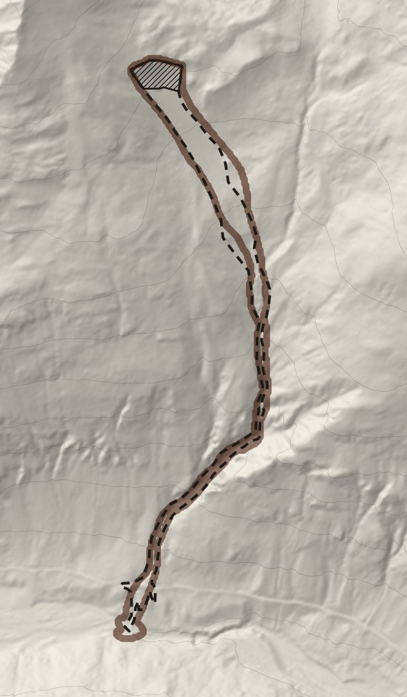
Wspólna część obrysów 0,70: na 10 kratek 7 wspólnych
Popeletzbach, Tyrol Wschodni (Austria), mokra lawina, 7.04.2009. Test bez podglądania: ustawienia dobrane na 4 innych lawinach. Najlepszy z 5 testów, wszystkie na slajdzie 6. Przykładowa kalibracja, nie dla Tatr.
Obrys: OpenNHM/AvaFrameData (F. Perzl, BFW), CC BY 4.0 · Teren: Land Tirol, CC BY 4.0 AT · Model: AvaFrame com1DFA
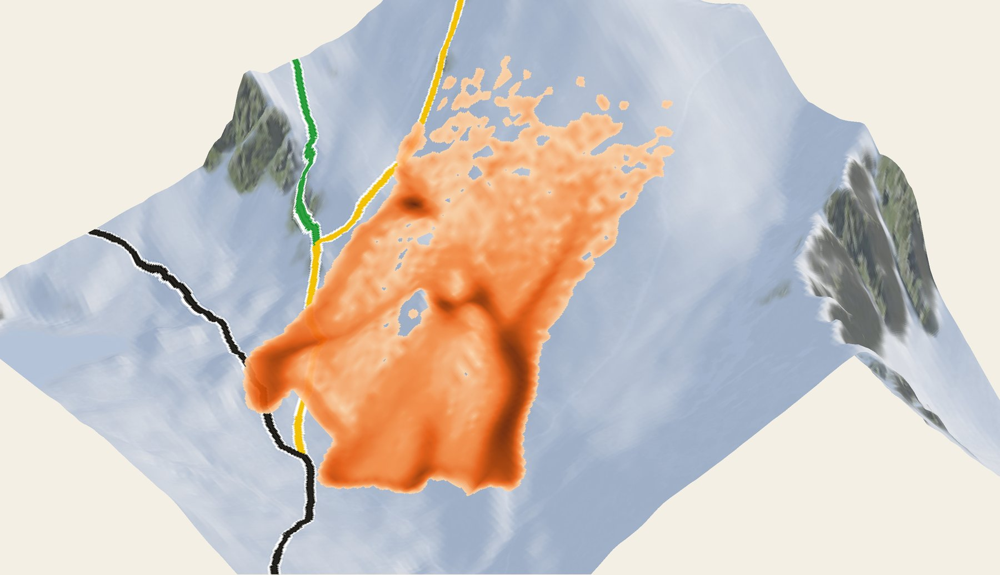
Jedna z 1566: Sucha Dolina NE, płyta 2,0 m. Ten stok zapali się w demo.
Teren: GUGiK NMT · Szlaki: © współtwórcy OpenStreetMap · Lawina: symulacja AvaFrame, śnieg syntetyczny
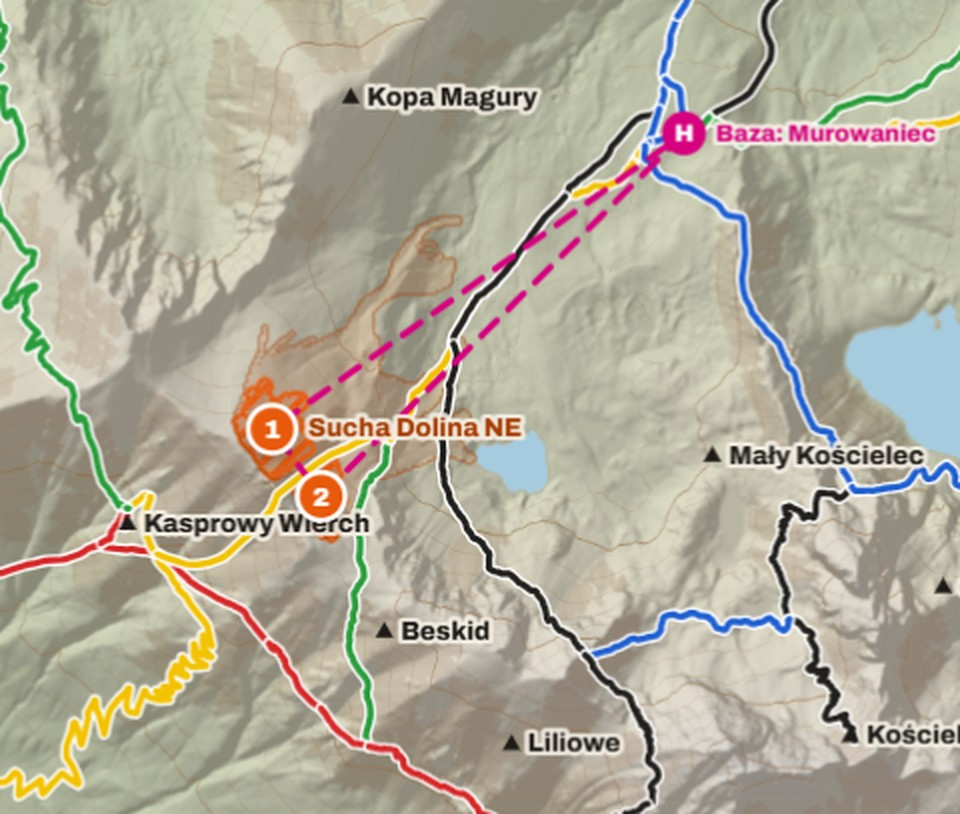
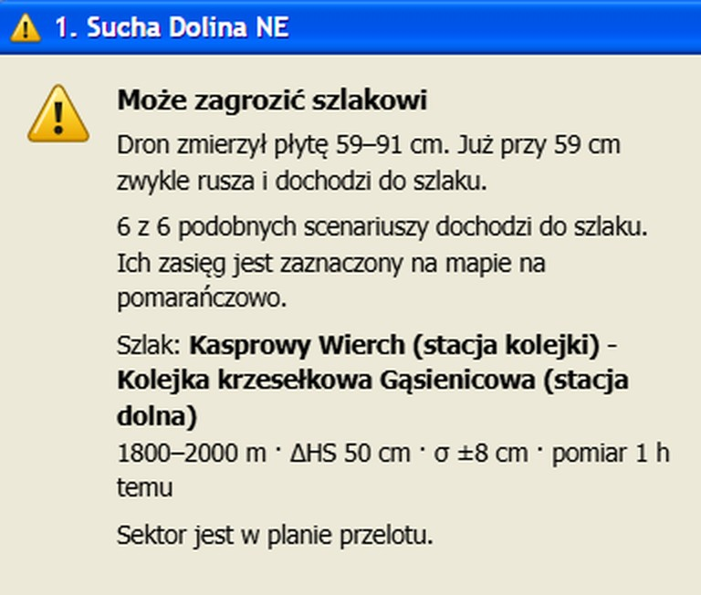
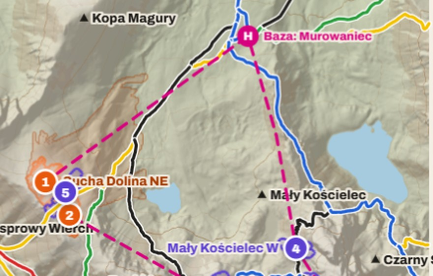
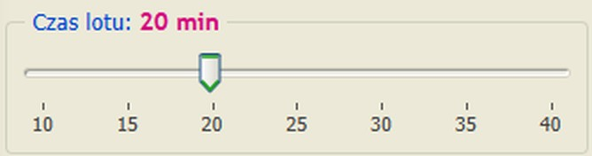
Laptop i przeglądarka, bez kont i integracji
Pogoda: IMGW-PIB (prawdziwa) · Grubość płyty i loty drona: syntetyczne · Teren: GUGiK NMT · Szlaki: © współtwórcy OpenStreetMap
Kasprowy Wierch, 11–13.01.2025: +34 cm w 3 dni, 72 h zamieci, pokrywa 51 → 85 cm (IMGW-PIB, dane prawdziwe)
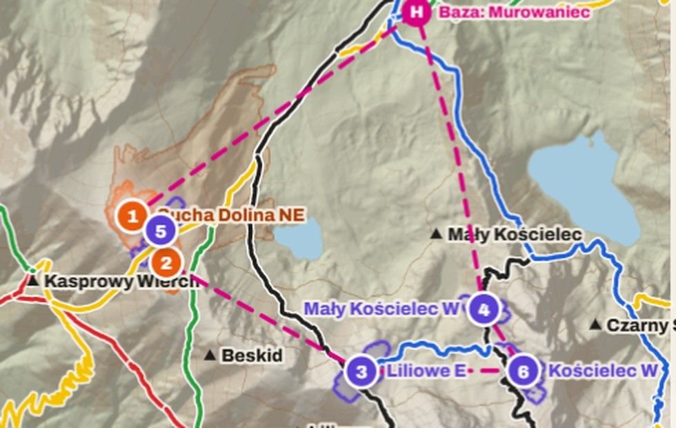
13.01.2025: zamieć, bez lotu
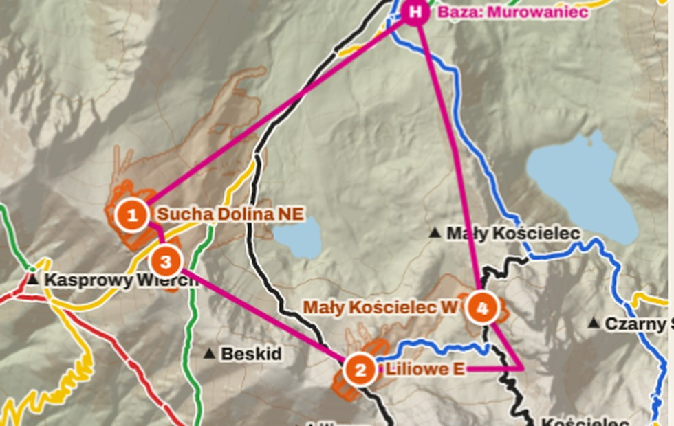
Po przelocie 20 min
Pogoda: IMGW-PIB (prawdziwa) · Grubość płyty i loty drona: syntetyczne · Teren: GUGiK NMT · Szlaki: © współtwórcy OpenStreetMap
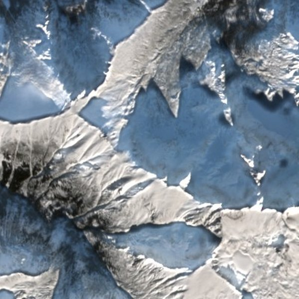
Sentinel-2, barwy naturalne: pierwszy czysty obraz 16.01, trzy dni po zamieci
Satelita pokazuje, gdzie leży śnieg, ale nie ile go jest. Grubość płyty musi zmierzyć dron.
Zawiera zmodyfikowane dane Copernicus Sentinel (2025) · Sentinel-2 L2A przez Element84 Earth Search (AWS Open Data)
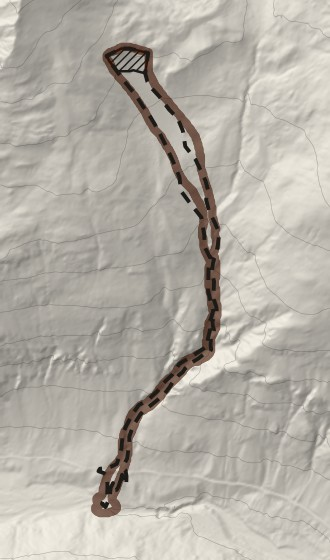
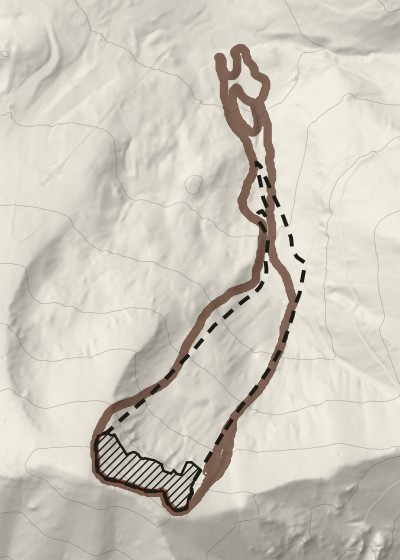
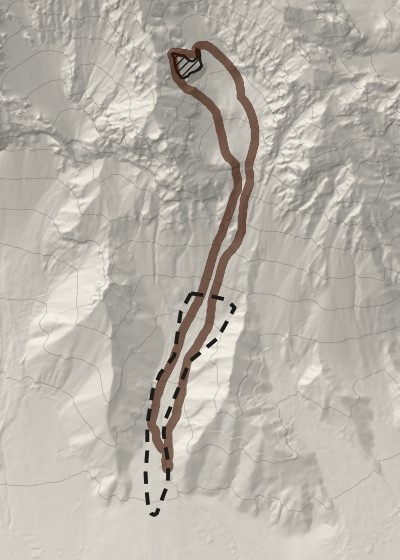
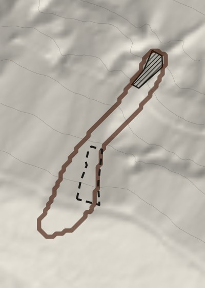
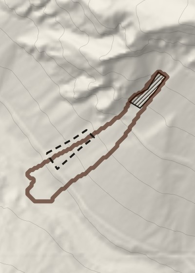
średnio 154 m
najgorzej +350 m
w 4 z 5 prób to samo ustawienie
Dopasowanie do jednej lawiny to jeszcze nie sprawdzian. Sprawdzianem jest lawina, której nie użyliśmy do dobierania ustawień.
Sprawdzone na prawdziwych lawinach z Austrii i Szwajcarii. Przykładowa kalibracja, nie dla Tatr. Model bez lasu i bez porywania śniegu, grubość odrywu zmierzona tylko na Eiskar. Dane zdarzeń: OpenNHM/AvaFrameData 1.0, CC BY 4.0 (F. Perzl, BFW; WLV; SLF Davos) · Teren: Land Tirol 5 m, CC BY 4.0 AT; BEV ALS DTM 1 m, CC BY 4.0; © swisstopo swissALTI3D 2 m (2019) [licencja do potwierdzenia przed pokazem] · Model: AvaFrame com1DFA 2.1
Sucha Dolina NE: 0,72, najsłabszy z 3 stoków testowych, pokazujemy go uczciwie
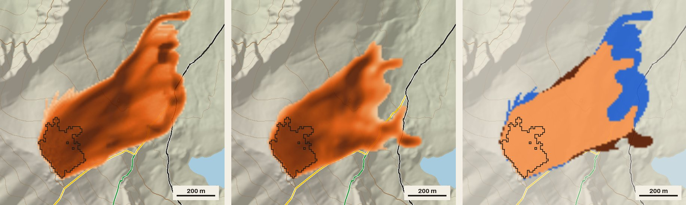
2,3 ms na karcie graficznej zamiast 10,43 s na jednym rdzeniu procesora. Dowód koncepcji: kopia przybliża AvaFrame, nie zastępuje go. Teren: GUGiK NMT · Szlaki: © współtwórcy OpenStreetMap · Grubość płyty: scenariusze, nie pomiar
| Z czym porównaliśmy | Wynik | Co to sprawdza |
|---|---|---|
| 5 prawdziwych lawin z Austrii i Szwajcarii, test bez podglądania | typowa pomyłka 92 m | czy fizyka trafia w rzeczywistość |
| 3 stoki Tatr, których sieć nie widziała | 0,81 | czy szybka kopia nie ściąga (sędzią jest fizyka) |
| komunikaty TOPR z zimy 2024/25, cytowane w prasie | przy „trójce”: 1 trafienie, 1 pominięcie, 1 doba spóźnienia | zdrowy rozsądek uproszczonej reguły, nie walidacja |
| wymyślony śnieg na prawdziwej pogodzie | 29 wobec 16 | test logiki: czy program dobrze liczy |
Sprawdziliśmy też RL: 19,9% wobec 20,2% spadku niepewności (1000 poranków). Remis, więc zostaje prosty plan.
Fizyka: sprawdzona na prawdziwych lawinach · Plan lotu: sprawdzony testem logiki · Prognoza dla Tatr: jeszcze niesprawdzona
Avalauncher nie jest zwalidowaną prognozą dla Tatr.
Stopnie z komunikatów TOPR cytowanych w prasie (PAP przez opoka.org.pl, rmf24.pl, dziennik.pl i in., źródła w docs/12), bez logo i bez współpracy z TOPR.
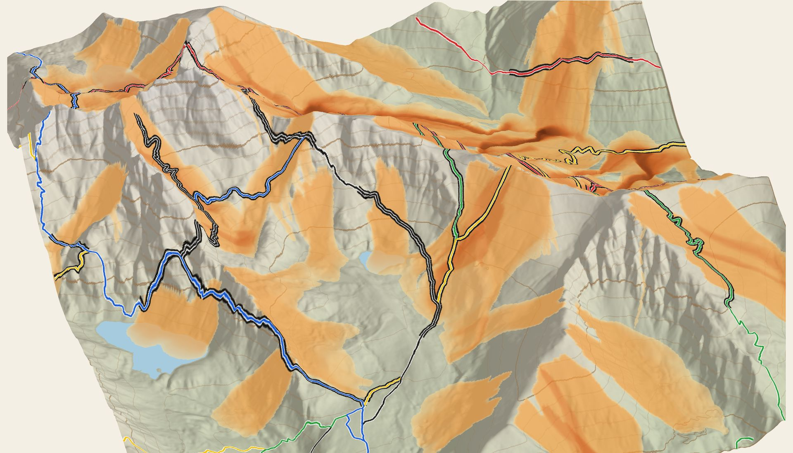
Do sprawdzenia: zgody na loty nad parkiem narodowym
Teren: GUGiK NMT · Szlaki: © współtwórcy OpenStreetMap · Śnieg na stokach: scenariusz syntetyczny
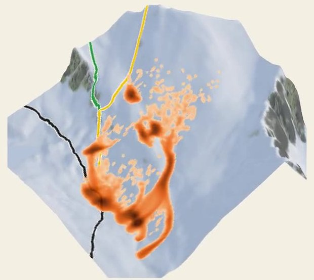
Drony mierzą śnieg. Avalauncher wskazuje stoki, które mogą zagrozić szlakom.